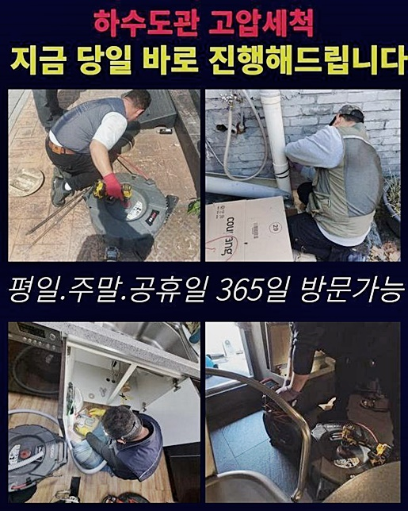
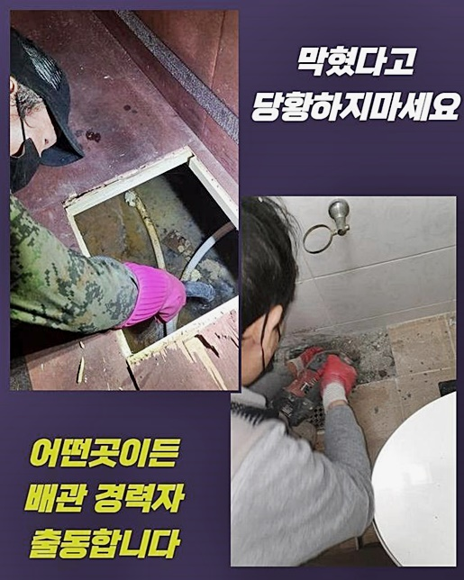
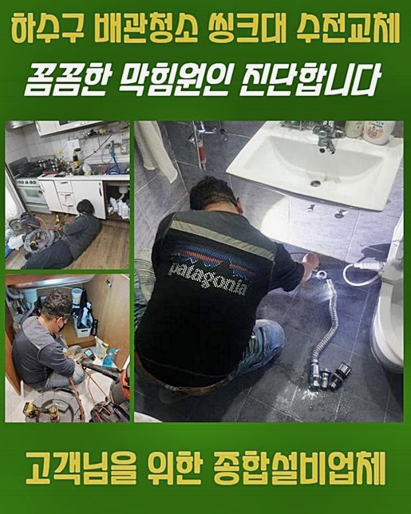
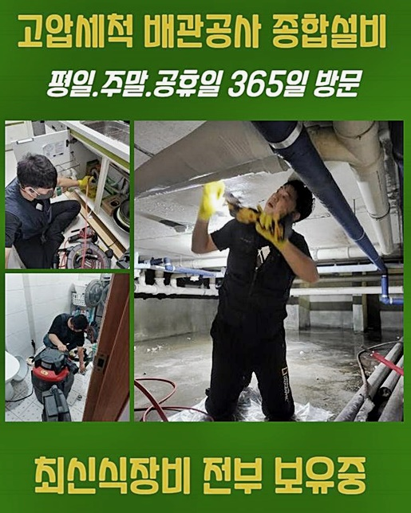
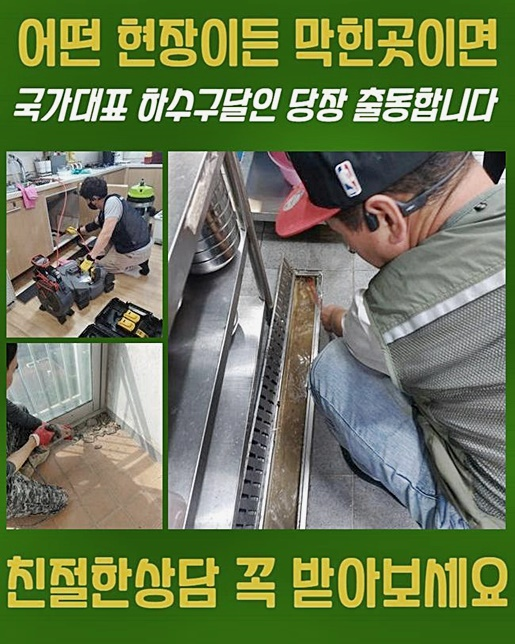
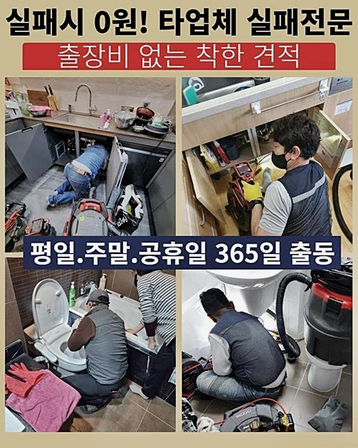

🏠 은평구 구산동하수구뚫음 증산동 하수구뚫어주는곳 설비공사
서울 은평구 하수구막힘 전문 시공 후기

📋 작업 개요
- 위치: 서울 은평구, 은평구, 서울
- 서비스 유형: 하수구막힘, 배관막힘, 역류해결, 뚫는업체, 배관청소, 고압세척, 설비공사
- 작업 일시: 2024. 7. 4. 19:51
- 업체명: 하수구수사대 (010-5615-2118)
🔍 문제 상황
은평구 구산동하수구뚫음 증산동 하수구뚫어주는곳 설비공사
배관막힘은 언제든지 발생할수있으므로 신속한대처가 중요한데요
막혀있는 정도마다 적절하게 대처하는것이 필요하고 빠르게 내방드려 뚫어드릴수있죠
저희들은 항시 고객요청에 정확한 대응으로 최상의서비스로 제공하고있어요
하수구가막혀서 곤란함이 느껴지시면 편안히 전화주시길 바래요 저희업체가 힘을써서 도와드리도록 하겠습니다
근래에 아파트건물에 살고계시는 고객분께서 배수관막힘으로 전화를하셨죠
이번장소의경우 10년가까이 흐르게된 건축물이었어요
욕실하수구에서 역류현상이 발현되어 연락주셨다고 하셨는데요
빠른대응으로 의뢰자의 편리를 우선순위로 생각하고있으며 권장하는시간에 알맞게 작업해드리고 있답니다
주말관계없이 출동이가능하여 막힘증세로 인해 불편했던점을 해소시켜드리고 있습니다
배수관에 어느만큼 역류되고있는지 살피고 물을흘려보냈죠
하수도바닥쪽이 심하게 젖은상태로 역류문제가 심각하다는것을 알수있었는데요
배관속을 체크해보니 오염물질때문에 막혔다는것을 예상했습니다
하수도가 막히게되는것은 단시간에 발현되는게 아니고 이용하면서 발생되는 오염물이 뒤엉키면서 막히는것이며 이에대해 관리해주는것이 필요한점을 전달드렸답니다

🔎 원인 분석
💡 전문가 진단: 정밀 진단 장비를 사용하여 슬러지의 고착 여부를 판명하고 타격/세척 작업을 실시했습니다.
궁금증이 있으셨던 부분을 해소할수가 있었답니다
이번현장에서는 이물세척이 불충분한것이 원인이었어요
오염물들이 쌓이고쌓여 물이정상으로 흐르지못했답니다
배관카메라를 이용해서 세척과정을 꼼꼼히 알려드렸는데요
장시간이 흘렀다보니 잔여물의형태가 어떤것인지 확실히 알기어려워도 조속히대처하여 해결할수가 있었답니다
재발현상이 발생되지않도록 심혈을기울인 확실한서비스로 안내해드릴것을 약속드려요
배관속이물을 정확하게 제거해줘야해요
주변마트에서 살수있는 클리너제품을 활용하여 제거해내려고 하시지만 성공적인 결과물이 나타날수없고 내버려둘경우 도리어증세를 심하게만들수 있답니다
이러므로 전문기술자를 호출해서 내부잔해물을 정확하게 제거시켜야합니다
이런문제는 부주의함 때문에 발현되게되는데 식기설거지시 기름기나 음식물들이 퇴적되게되면서 발현되고있어요
배관이막혀 연락주신 고객을 도와드리려고 신속히 작업장소로 출동했어요
검사를위해 전문기계를 동원하여 작업을 진행해보기로했죠
잔여물을 없애는건 석션기계나 샤프트기계를 통하여 제거하고있어요
오염물이 쌓인곳은 고압청소를 진행해 처리하고 잔여이물은 흡입도구를 활용하여 제거해냅니다

🔧 작업 과정
확실하게 이물질들을 소거하고 하수도를 깔끔히 유지시키는것에 신경을쓰고있어요
이런식으로 청소작업을 진행해서 고객의불편을 최소화하고 예방법까지 알려드립니다
저희업체의 작업시간대는 제한걸려있지 않는데요
이유를 알려드리면 밤낮가리지않고 막힘증세로 인하여 불편함을 느낄수있기 때문이랍니다
저희의경우 최첨단기계를 준비하여 급박하게 현장지역으로 출동해보았죠
화장실쪽으로 이동해봤더니 심한악취를 동원하면서 심화된상태임을 알아차렸죠
일단물을 흘려보내고 역류문제가 어떤지 세세하게 살핀후 물빠짐상태까지 조사해보았요
저희기술자가 방문해보기 며칠전에도 타업체에서 배관작업을 실패했다고하셨죠
따라서 우리를 부르셨다고 합니다
저희들은 출장비에대해서 요구하지않기에 서비스가만족된다고 말씀해주셨죠
성공한후에도 추후관리도 진행하기에 흡족해하셨어요
하수구안쪽을 검사하려고 내시경기기를 이용했습니다
배관상태를 살펴봤더니 잔여물질이 보이는걸 살펴볼수 있었는데요
효율적이게 문제해결하고자 최선을다했으며 성공적인결실을 보여드릴수있었죠
배관내벽에 달라붙어있는 잔여물을 없애기위해 석션기를이용해 이루어졌어요
석션작업뒤 배수상황을 관찰하고자 흘려보내보았지만 배수가정상적으로 작동되지않는걸 살펴볼수있었죠
하수구cctv를 활용해서 하수도안쪽을 세세히 관찰했는데요
관찰과정중 내시경이 막히는지점이 보였으므로 상세하게조치를 취할수있었죠
샤프트기계를 통하여 굳은잔여물까지 소거시켜보니 원활하게 배수되는걸 확인할수있었어요
요청한시간에 알맞게 작업을 마무리하고 예방방법도 제시해드렸습니다
고객님과의 소통을통해 원활하게 작업계획이 이루어졌죠
막힘증세를 처음경험하셔서 혼란스러우시고 막힌이유에 대하여 알지못하여 갑갑할겁니다


✅ 작업 완료
막힘증세때문에 일상에 지장이가게되면 전문적인 조치가 필요하기에 편하실때 저희업체로 의뢰하시면 됩니다
막힌하수구를 위하여 심혈을기울인 작업으로 진행하겠습니다
여러번이나 말씀드렸지만 하수구막힘은 내버려둘수록 2차적인 문제로 발발될수있기에 문제를 발견한즉시 해결해보시는것이 좋겠습니다
1시간안으로 내방이가능하니 전화만주시면 신속한서비스로 내방하겠습니다
투명히 수립계획을 보여드리고있으니 걱정마세요!
이밖에도 궁금한것이 있을경우 문의하셔서 물어보셔도되기에 맘편히 요청하시면 세세한응대로 도와드려볼게요




⚠️ 하수구 배관 막힘 예방 및 관리 가이드
- ✅ 머리카락, 비닐, 물티슈 등 물에 분해되지 않는 이물질은 하수구 유입을 절대 금지해 주세요.
- ✅ 하수구 거름망을 씌우고 모여진 이물질은 주기적으로 쓰레기통에 바로 비워주셔야 합니다.
- ✅ 배관 노후가 심할 경우 이물질이 더 쉽게 걸리므로 주기적인 배관 세척(고압세척 등)을 권장합니다.
- ✅ 작업 후 1년 이내 재발 시 하수구수사대에서 무상 A/S 보증 서비스를 제공합니다.
💡 핵심 정리
- 확실한 장비 작업(내시경 점검 및 샤프트 스케일링)으로 원인을 뿌리 뽑습니다.
- 작업 후 1년 이내에 동일한 부위 재발 시 100% 무상 A/S 서비스를 보장합니다.
- 서울 · 경기 · 인천 전 지역에 24시간 언제든 긴급 출동할 수 있도록 항시 대기 중입니다.
❓ 자주 묻는 질문 (FAQ)
🚨 서울 은평구 하수구막힘 문제로 고민이신가요?
정확한 원인 진단과 확실한 시공으로 재발 없는 해결을 약속드립니다.
24시간 긴급 출동 | 서울 · 경기 · 인천 전지역 | 1년 내 재발 시 무상 A/S